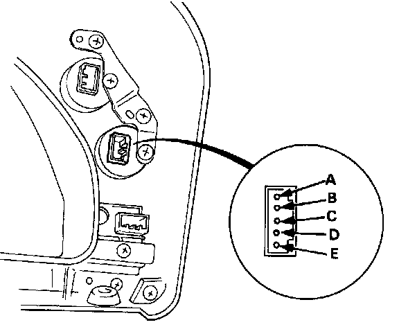
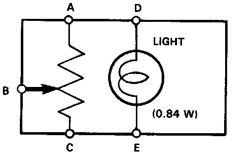

Controller Test


Controller Test
1. Remove the instrument panel from the dashboard
2. Measure resistance between the A and C terminals.
Resistance: 8,000-12,000 ohms
NOTE: Resistance will vary slightly with temperature.
3. Measure resistance between the B and C terminals while rotating the adjusting dial.
Resistance should vary from 0 to 10,000 ohms as the dial is rotated.